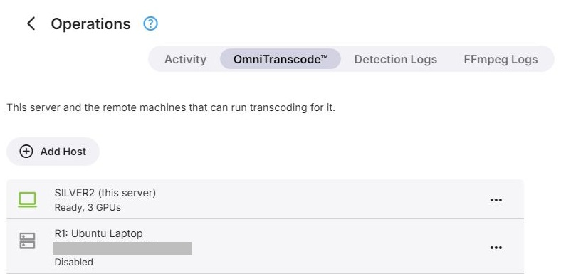
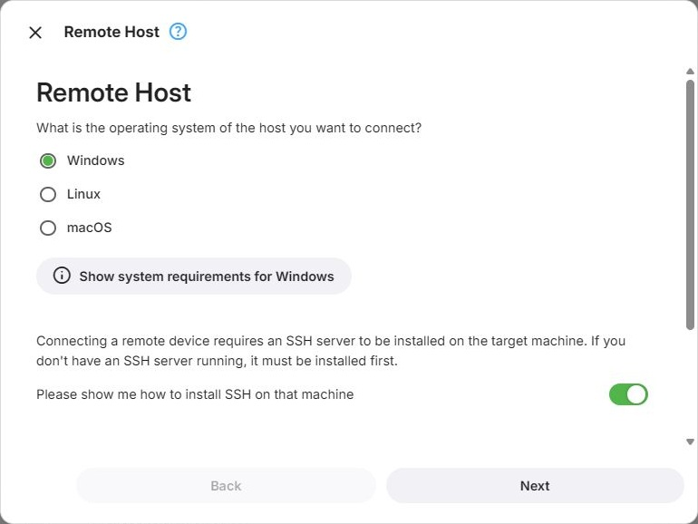
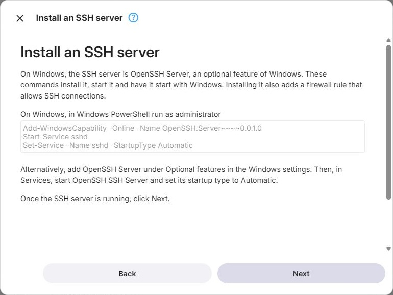
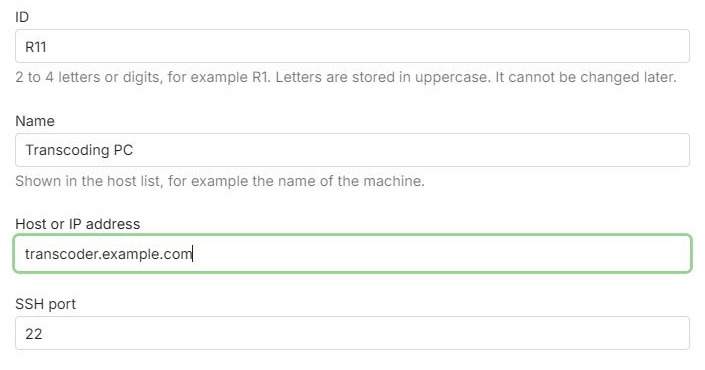

OmniTranscode™
OmniTranscode™ - Remote Transcoding Hosts
OmniTranscode™ lets Emby Server run transcoding jobs on other computers - remote hosts - and use their GPUs. Hosts are managed on the OmniTranscode™ tab of the Operations page.
OmniTranscode™ is available when Emby Server runs on Windows or Linux.

Remote connection details are redacted.
How It Works
Emby Server connects to a remote host over SSH and logs in as a user of its own, which is created on the host for this purpose and used for nothing else. Under that user, Emby installs its own FFmpeg and mounts the folders FFmpeg needs from the server: the media, the transcoding output, and server data such as fonts and subtitle caches. The folders are reached through the SSH connection, so no network shares have to be set up.
GPUs detected on a host become devices in the transcoding configuration, just like the server's own:
- In Basic Mode, remote GPUs are not used.
- In Advanced Mode, newly detected remote GPUs are added switched off. Switch them on to use them.
- In Expert Mode, the configuration stays as you built it. Remote GPUs can be placed like any other device, including in load-balancing groups.
When the configuration picks a remote GPU for a job, that job's FFmpeg runs on the host. Live TV never uses a remote GPU.
Any number of hosts can be saved, and up to two can be enabled at a time. A host that is switched off is not used, and its nodes in the configuration show Host disabled.
Requirements
Only systems that remote transcoding is known to work on are supported; everything else is refused, even where it might work.
Windows
- Windows 10 version 1809 or Windows Server 2019 (build 17763) or newer, including Windows 11 and Windows Server 2022/2025
- 64-bit x86 only - no 32-bit, no ARM64
- OpenSSH Server
macOS
- macOS 15 or newer on Apple silicon - no Intel Macs
- macFUSE and its SSHFS
Linux
- Ubuntu 24.04, 25.10 and newer; Debian 12 and newer; Fedora 42 and newer; Linux Mint 22.1 and newer; Arch Linux, Manjaro and openSUSE Tumbleweed. Derivatives with an identity of their own, such as Pop!_OS, EndeavourOS or openSUSE Leap, are not supported.
- 64-bit x86 or 64-bit ARM, running a 64-bit system
- glibc 2.34 or newer, and systemd
- No immutable (ostree) systems such as Fedora Silverblue or Fedora CoreOS
Not supported, whatever they run: virtual machines of any kind including cloud instances, containers of any kind (Docker, Podman, Kubernetes, LXC/Incus, OpenVZ, systemd-nspawn, Windows containers), Proxmox VE, WSL, and NAS systems.
The requirements are checked when Emby logs in to the host, and again every time the host is prepared.
Beyond that, a remote host needs exactly what Emby Server itself would need on the same system. On Linux, the Intel and AMD user-space GPU drivers are included, as they are with Emby Server. Windows hosts still need the manufacturer's graphics drivers installed. See GPU Setup for the requirements for each platform and GPU.
Adding a Host
Add Host on the OmniTranscode™ tab starts a wizard with the following steps. Editing an existing host starts at the address step.
Operating System
Choose whether the host runs Windows, Linux or macOS. Show system requirements lists the requirements for that system. An SSH server must already be running on the host - check Please show me how to install SSH on that machine to get instructions for it.

Installing an SSH Server
Only shown when the instructions were requested:
- Windows - install OpenSSH Server and set its service to start automatically, either in PowerShell or through Optional Features and Services
- Linux - install and start OpenSSH with the distribution's package manager, and allow it through the firewall (ufw or firewalld)
- macOS - turn on Remote Login under System Settings → General → Sharing, or with a Terminal command

Host Address
- ID - 2 to 4 letters or digits that identify the host, for example R1. It cannot be changed later.
- Name
- Host - host name or IP address
- Port - the SSH port, 22 by default

At this point Emby only checks that an SSH server answers; logging in comes later. When the address is already used by another host entry, Emby warns about it, and Next has to be clicked again to continue anyway.
Connection Method
Emby logs in to the host as a user of its own. Choose how that user is set up:
- Set it up for me - you provide an administrator login once, and Emby creates the user
- I want to set it up manually - Emby shows the commands, and you run them on the host yourself
Administrator Login
The login is used once, to create Emby's user and authorize Emby's key. It is not saved. On Linux and macOS, the account must be able to use sudo.
Authenticate either with a user name and password, or with a private key file and its passphrase, if it has one. A separate Sudo password can be given; leave it empty when sudo needs no password.
Manual Setup
Shows the commands that create Emby's user - to run in a terminal on Linux and macOS, or in Windows PowerShell run as administrator on Windows. Next then logs in as that user.
Host Setup
Lists what still has to be done on the host with administrator rights, such as installing the software used to mount the server's folders. With the automatic method, Perform setup does it; with the manual method, the page shows the commands to run. Next checks the result, saves the host and starts preparing it.
If two hosts are already enabled, the new host is saved switched off.
Preparing the Host
Emby installs its transcoder on the host, mounts the server's folders there and detects the GPUs. The page shows each step as it runs: connection, login, system, host setup, downloading, installing and testing FFmpeg, folder mounts, and hardware detection.
The host stays saved even when preparation fails - see Troubleshooting a Host. A host that was saved switched off is not prepared.
Troubleshooting a Host
Troubleshoot on an enabled host runs the preparation again, or follows one that is already running, and lists each step with its result. Check again repeats it.
The hardware detection log of each host is available under Detection Logs, and the FFmpeg logs of the jobs that ran on it under FFmpeg Logs.
Messages
Where a step cannot be completed, a message says why. Most of them include the error the host or the connection reported.
- Same machine - another host entry already connects to the same address and port. A second entry for the same machine gets a user of its own there, and Emby treats the two as separate machines with the same GPUs. Click Next again to add it anyway.
- Cannot connect - no SSH server answered at the address and port. Check that the SSH server is running, that address and port are correct, and that no firewall blocks the connection.
- Login failed - the host did not accept the administrator login.
- Cannot log in yet - after manual setup, the host does not accept the key of Emby's user yet. Check that the commands ran without errors, then click Next again.
- Setup failed - performing the host setup failed.
- Setup incomplete - the host setup ran, but something still is not ready. The message lists what.
- Not done yet - checking the host showed that not everything listed under host setup has been done yet. The message lists what remains.
- Cannot check the host - Emby could not complete checking the host.
- Cannot save the host - the host entry could not be saved.
- Cannot enable the host - switching the host on failed.
Removing a Host
Removing a host cannot be undone; to use the machine again, it has to be added as a new host. Removing only takes the host out of Emby Server - the user Emby created on the host stays in place.
Cleaning Up the Host
Emby's user on the host is named emby followed by four digits, for example emby0815. Everything Emby put on the host is in that user's home folder, which also contains a file Why this user exists.txt that names the host entry it belongs to and the exact command for removing the user.
Linux
sudo userdel -r emby0815macOS
sudo rm -rfx ~emby0815 && sudo dscl . -delete /Users/emby0815Windows, in Windows PowerShell run as administrator
$a = Get-LocalUser emby0815; Get-CimInstance Win32_UserProfile -Filter "SID='$($a.SID)'" | Remove-CimInstance; Remove-LocalUser emby0815
Software that host setup installed for everyone on the machine - WinFsp and SSHFS-Win on Windows, packages on Linux - stays installed, as does the SSH server. Remove it separately if nothing else uses it.
Further Reading
Hardware acceleration in Emby Server
How a transcoding pipeline works